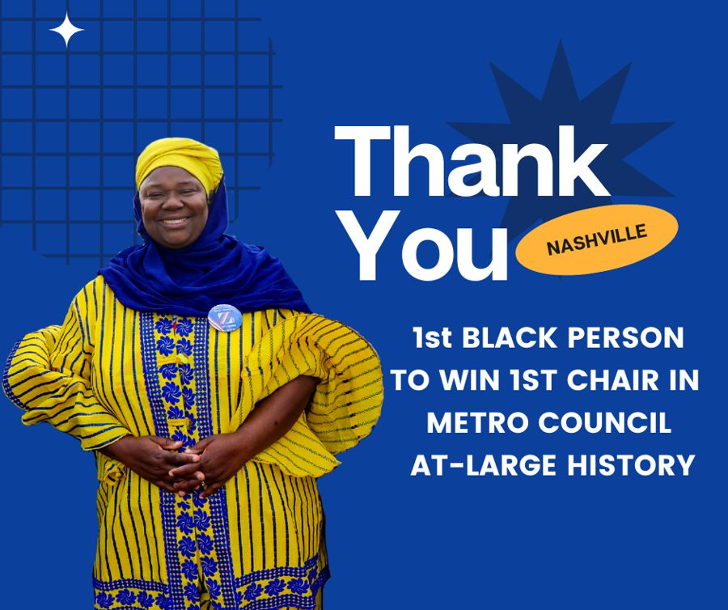
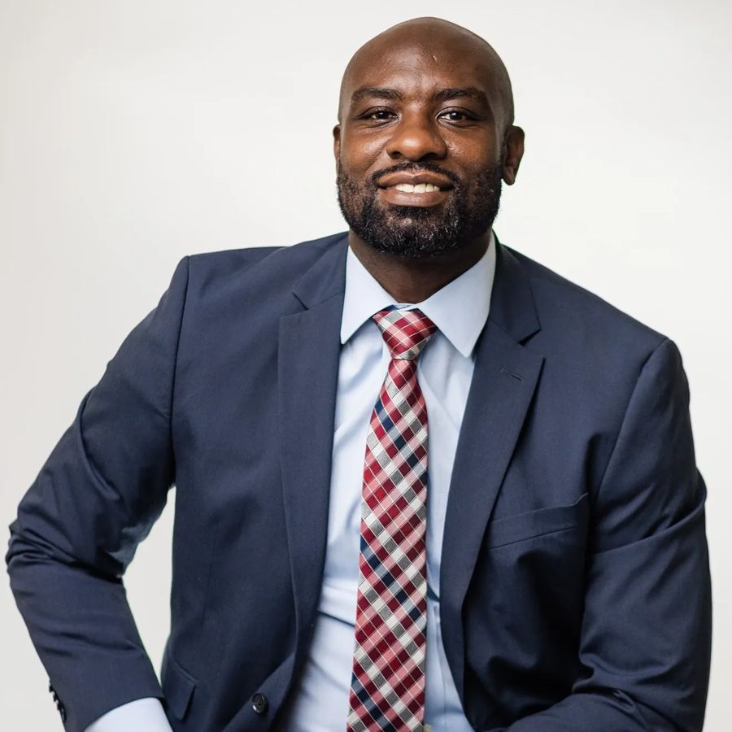
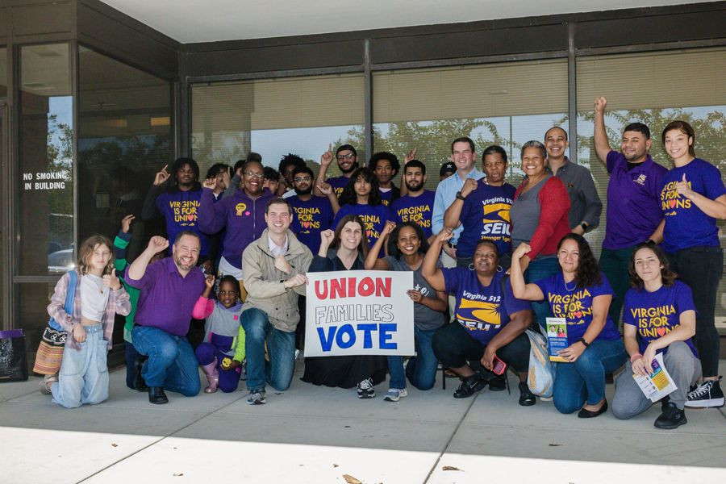

Women win all five at-large Metro council seats (Leo Clients – Allen, Hill, Suara)
NASHVILLE, Tenn. (WSMV) – After a historic day in Nashville’s voting history, all at-large seats on Nashville’s Metro Council are filled by women.
Incumbent Zulfat Suara won back her seat on Aug. 3 in Nashville’s primary election, earning enough votes to avoid a runoff.
Incumbent Burkley Allen scored enough votes Thursday to be re-elected to her at-large seat, while educator Delishia Danielle Porterfield, attorney Quin Evans-Segall and veteran Olivia Hill, the first transgender woman to be elected in Tennessee, filled in the remaining spots as first-time council members.
Porterfield and Evans-Segall earned 14% of the votes cast in Thursday’s election, while Allen and Hill had 13% of the votes each.
The women beat out incumbents Jeff Syracuse and Russ Pull, and newcomers Howard Jones and Chris Cheng. Cheng missed being elected by about 1,300 votes.
Full Article
Firsts.Wins.
Women win all five at-large Metro council seats (Leo Clients – Allen, Hill, Suara)
 Leo client win / 2023
Leo client win / 2023Olivia Hill is first openly transgender person elected to Metro Nashville Council

Leo client win / 2023Zulfat Suara 1st Black Person in Metro Council History to Win Chair in the Race for Councilmember At-Large
 Leo client win / 2022
Leo client win / 2022DA Glenn Funk Wins Democratic Primary

Leo client win / 2020John Little wins Metro School Board District 4 seat

Leo client win / 2023Virginia Democrats take full control of statehouse
Ready towin?
Tell us what you’re running for, building or launching. We’ll tell you how we make people remember it.
Email Leo Operations →